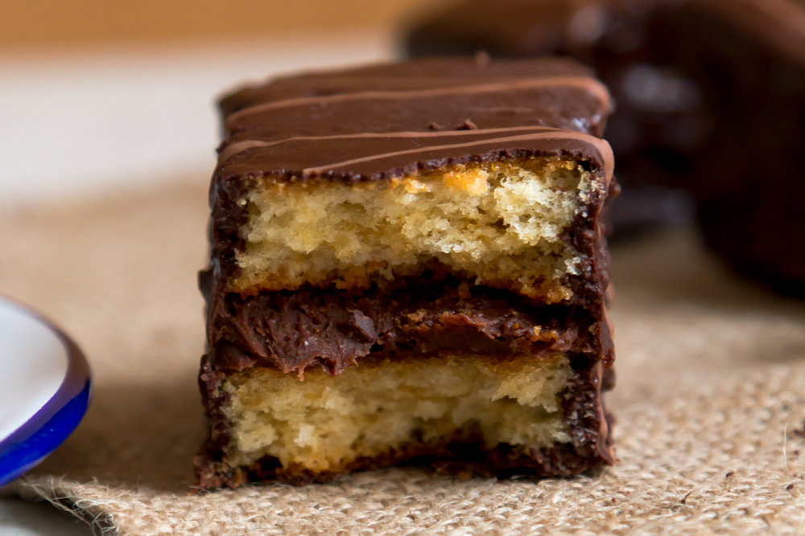

Merendina
Original Recipe

Description
Recipe development and blogging requires “a bit” of creativity. You want to make sure you come up with recipes your readers will like, but you also want to ensure that the recipes are not too hard to follow; don’t require challenging ingredients, are seasonal and super tasty. I have a file in my computer with about a thousand recipe “thoughts” where I have the most random recipe ideas such as Moroccan gyoza? (the question mark means I don’t think it’s a good idea) and Harissa and lemon chicken traybake! (the exclamation mark means I think it’s a great idea).
About two years ago I added Merendina to the list and then forgot about it. I wasn’t sure the recipe would be easy to reproduce so I kept it in the back of my head until I had more time to think about it and work on a good and easy recipe. A few weeks ago, after I submitted the last bits of my cookbook (did you know I wrote a cookbook?) I finally decided to start recipe testing for Merendina.
For those who don’t know, Merendina is the cherished symbol of childhood for Moroccan millennials; I don’t know a single Moroccan who doesn’t get nostalgic at the sight of a flamboyant red pack of Merendina. It consists of a kind of “genoise” vanilla sponge sandwiched with a chocolate ganache and coated with more chocolate. I know what you’re thinking, what’s not to LOVE about it!?
The main challenges with this recipe were the taste and the appearance. It was really important for me that it would taste and look just like the real thing while not making things too complicated. After a few trials I have cracked the code and my recipe has been tested and approved by proper Moroccan Merendina aficionados (Hi Amina and Soufiane!). Yallah, time to make your homemade Merendina and let me know how it goes. xx
Ingredients
Ganache
- 200 gr 70% dark chocolate
- 200 gr double cream
- 50 gr icing sugar
Sponge
- 140 gr plain flour
- 40 gr cornflour
- ½ teaspoon baking powder
- ½ teaspoon baking soda
- ¼ teaspoon salt
- 2 large eggs
- 170 gr caster sugar
- 1 teaspoon vanilla extract
- 90 ml sunflower oil and more for oiling
- 120 ml buttermilk
Syrup
Coating
- 300 gr 70% dark chocolate, chopped
- 3 tablespoons coconut oil
- 40 gr milk chocolate, chopped
Steps
- Start with the ganache. In a medium sized saucepan, add in the double cream, chocolate and icing sugar over medium-low heat and leave stirring occasionally until the chocolate is melted and the mixture is well combined, about 5 minutes. Cover with cling film and place in the fridge until the ganache is spreadable, about 1 hour. After 1 hour remove it from the fridge otherwise, the ganache will become very hard and you won't be able to spread it.
- Preheat the oven to 180C/350F/Gas 4. Oil and line a 39.5 X 27 cm baking sheet with baking paper. Set aside. In a large mixing bowl, mix together the flour, cornflour, baking powder, baking soda and salt. Set aside.
- In another bowl, add in the eggs and the sugar and use an electric whisk to beat the eggs and the sugar until the mixture becomes thick, fluffy, and triples in size, about 5 minutes. Add the vanilla extract and the vegetable oil, and whisk again for few seconds until the mixture is well combined. Gradually add in the dry ingredients mixture until fully incorporated. Finally, progressively stir in the buttermilk until the mixture is well combined.
- Pour the batter in the prepared baking sheet and spread the cake mixture evenly all over the pan. Bake for 17 to 20 minutes or until a toothpick inserted in the center comes out clean. Allow to cool completely on a wire rack before assembling. Meanwhile make the syrup. Bring 40 gr of cold water and the caster sugar to a boil over high heat, reduce the heat to low and stir until all the sugar dissolvers, 3 to 5 minutes. Set aside and leave to cool.
- Once the cake is completely cool, halve it vertically and brush the surface of the two sponge cakes with syrup. Discard the remaining syrup, if any. Spread the ganache all over one of the sponge cakes and top it with the other half. Lightly press the sandwiched cakes to level them and use a sharp knife to divide it into 10 parts to make 10 rectangles.
- Place the dark chocolate and the coconut oil in a microwave-safe shallow bowl stopping and stirring at 15 seconds intervals until smooth and creamy. Leave the chocolate to cool until it reaches room temperature, about 10 minutes.
- Use two forks (or a small slotted turner) to dip a sandwich in the dark chocolate, a few seconds on each side to fully coat it in chocolate. Immediately transfer the coated sandwich on baking or silicon paper. Repeat until all the sandwiches are coated with chocolate. Transfer the milk chocolate and a teaspoon of water in a microwave-safe bowl stopping and stirring at 10 seconds intervals until smooth and creamy. Use a fork to splatter the milk chocolate over the coated sandwiches. Leave until the chocolate is firm, about 2 hours at room temperature, 40 minutes in the fridge. Serve immediately.
Home Page